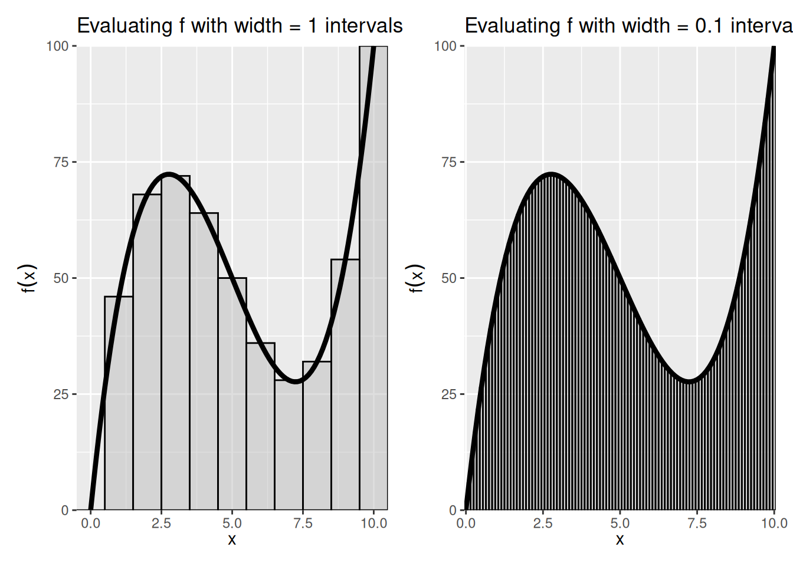

Warning: Using `size` aesthetic for lines was deprecated in ggplot2 3.4.0.
ℹ Please use `linewidth` instead.3 Calculus
Calculus is a fundamental part of any type of statistics exercise. Although you may not be taking derivatives and integral in your daily work as an analyst, calculus undergirds many concepts we use: maximization, expectation, and cumulative probability.
Example: The Mean is a Type of Integral
The average of a quantity is a type of weighted mean, where the potential values are weighted by their likelihood, loosely speaking. The integral is actually a general way to describe this weighted average when there are conceptually an infinite number of potential values.
If \(X\) is a continuous random variable, its expected value \(E(X)\) – the center of mass – is given by
\[E(X) = \int^{\infty}_{-\infty}x f(x) dx\]
where \(f(x)\) is the probability density function of \(X\).
This is a continuous version of the case where \(X\) is discrete, in which case
\[E(X) = \sum^\infty_{j=1} x_j P(X = x_j)\]
even more concretely, if the potential values of \(X\) are finite, then we can write out the expected value as a weighted mean, where the weights is the probability that the value occurs.
\[E(X) = \large \sum_{x} \quad\left( \underbrace{x}_{\text{value}}\cdot \underbrace{P(X = x)}_{\text{weight, or PMF}}\right)\]
3.1 Derivatives
The derivative of \(f\) at \(x\) is its rate of change at \(x\): how much \(f(x)\) changes with a change in \(x\). The rate of change is a fraction — rise over run — but because not all lines are straight and the rise over run formula will give us different values depending on the range we examine, we need to take a limit (Section Chapter 2).
Definition 3.1 (Derivative) Let \(f\) be a function whose domain includes an open interval containing the point \(x\). The derivative of \(f\) at \(x\) is given by
\[\frac{d}{dx}f(x) =\lim\limits_{h\to 0} \frac{f(x+h)-f(x)}{(x+h)-x} = \lim\limits_{h\to 0} \frac{f(x+h)-f(x)}{h}\]
There are a two main ways to denote a derivative:
- Leibniz Notation: \(\frac{d}{dx}(f(x))\)
- Prime or Lagrange Notation: \(f'(x)\)
If \(f(x)\) is a straight line, the derivative is the slope. For a curve, the slope changes by the values of \(x\), so the derivative is the slope of the line tangent to the curve at \(x\). See, For example, Figure Figure 3.1.
If \(f'(x)\) exists at a point \(x_0\), then \(f\) is said to be differentiable at \(x_0\). That also implies that \(f(x)\) is continuous at \(x_0\).
Properties of derivatives
Suppose that \(f\) and \(g\) are differentiable at \(x\) and that \(\alpha\) is a constant. Then the functions \(f\pm g\), \(\alpha f\), \(f g\), and \(f/g\) (provided \(g(x)\ne 0\)) are also differentiable at \(x\). Additionally,
Constant rule: \[\left[k f(x)\right]' = k f'(x)\]
Sum rule: \[\left[f(x)\pm g(x)\right]' = f'(x)\pm g'(x)\]
With a bit more algebra, we can apply the definition of derivatives to get a formula for of the derivative of a product and a derivative of a quotient.
Product rule: \[\left[f(x)g(x)\right]^\prime = f^\prime(x)g(x)+f(x)g^\prime(x)\]
Quotient rule: \[\left[f(x)/g(x)\right]^\prime = \frac{f^\prime(x)g(x) - f(x)g^\prime(x)}{[g(x)]^2}, ~g(x)\neq 0\]
Finally, one way to think of the power of derivatives is that it takes a function a notch down in complexity. The power rule applies to any higher-order function:
Power rule: \[\left[x^k\right]^\prime = k x^{k-1}\]
For any real number \(k\) (that is, both whole numbers and fractions). The power rule is proved by induction, a neat method of proof used in many fundamental applications to prove that a general statement holds for every possible case, even if there are countably infinite cases. We’ll show a simple case where \(k\) is an integer here.
Proof (Proof of Power Rule by Induction). We would like to prove that
\[\left[x^k\right]^\prime = k x^{k-1}\] for any integer \(k\).
First, consider the first case (the base case) of \(k = 1\). We can show by the definition of derivatives (setting \(f(x) = x^1 = 1\)) that
\[[x^1]^\prime = \lim_{h \rightarrow 0}\frac{(x + h) - x}{(x + h) - x}= 1.\]
Because \(1\) is also expressed as \(1 x^{1- 1}\), the statement we want to prove holds for the case \(k =1\).
Now, that the statement holds for some integer \(m\). That is, assume \[\left[x^m\right]^\prime = m x^{m-1}\]
Then, for the case \(m + 1\), using the product rule above, we can simplify
\[\begin{align*} \left[x^{m + 1}\right]^\prime &= [x^{m}\cdot x]^\prime\\ &= (x^m)^\prime\cdot x + (x^m)\cdot (x)^\prime\\ &= m x^{m - 1}\cdot x + x^m ~~\because \text{by previous assumption}\\ &= mx^m + x^m\\ &= (m + 1)x^m\\ &= (m + 1)x^{(m + 1) - 1} \end{align*}\]Therefore, the rule holds for the case \(k = m + 1\) once we have assumed it holds for \(k = m\). Combined with the first case, this completes proof by induction – we have now proved that the statement holds for all integers \(k = 1, 2, 3, \cdots\).
To show that it holds for real fractions as well, we can prove expressing that exponent by a fraction of two integers.
These “rules” become apparent by applying the definition of the derivative above to each of the things to be “derived”, but these come up so frequently that it is best to repeat until it is muscle memory.
Exercise 3.1 (Derivative of Polynomials) For each of the following functions, find the first-order derivative \(f^\prime(x)\).
- \(f(x)=c\)
- \(f(x)=x\)
- \(f(x)=x^2\)
- \(f(x)=x^3\)
- \(f(x)=\frac{1}{x^2}\)
- \(f(x)=(x^3)(2x^4)\)
- \(f(x) = x^4 - x^3 + x^2 - x + 1\)
- \(f(x) = (x^2 + 1)(x^3 - 1)\)
- \(f(x) = 3x^2 + 2x^{1/3}\)
- \(f(x)=\frac{x^2+1}{x^2-1}\)
3.2 Higher-Order Derivatives (Derivatives of Derivatives of Derivatives)
The first derivative is applying the definition of derivatives on the function, and it can be expressed as
\[f'(x), ~~ y', ~~ \frac{d}{dx}f(x), ~~ \frac{dy}{dx}\]
We can keep applying the differentiation process to functions that are themselves derivatives. The derivative of \(f'(x)\) with respect to \(x\), would then be \[f''(x)=\lim\limits_{h\to 0}\frac{f'(x+h)-f'(x)}{h}\] and we can therefore call it the Second derivative:
\[f''(x), ~~ y'', ~~ \frac{d^2}{dx^2}f(x), ~~ \frac{d^2y}{dx^2}\]
Similarly, the derivative of \(f''(x)\) would be called the third derivative and is denoted \(f'''(x)\). And by extension, the nth derivative is expressed as \(\frac{d^n}{dx^n}f(x)\), \(\frac{d^ny}{dx^n}\).
Example 3.1 (Succession of Derivatives)
\[\begin{align*} f(x) &=x^3\\ f^{\prime}(x) &=3x^2\\ f^{\prime\prime}(x) &=6x \\ f^{\prime\prime\prime}(x) &=6\\ f^{\prime\prime\prime\prime}(x) &=0\\ \end{align*}\]Earlier, in Section Section 3.1, we said that if a function differentiable at a given point, then it must be continuous. Further, if \(f'(x)\) is itself continuous, then \(f(x)\) is called continuously differentiable. All of this matters because many of our findings about optimization (Section Chapter 4) rely on differentiation, and so we want our function to be differentiable in as many layers. A function that is continuously differentiable infinitly is called “smooth”. Some examples: \(f(x) = x^2\), \(f(x) = e^x\).
3.3 Composite Functions and the Chain Rule
As useful as the above rules are, many functions you’ll see won’t fit neatly in each case immediately. Instead, they will be functions of functions. For example, the difference between \(x^2 + 1^2\) and \((x^2 + 1)^2\) may look trivial, but the sum rule can be easily applied to the former, while it’s actually not obvious what do with the latter.
Composite functions are formed by substituting one function into another and are denoted by \[(f\circ g)(x)=f[g(x)].\] To form \(f[g(x)]\), the range of \(g\) must be contained (at least in part) within the domain of \(f\). The domain of \(f\circ g\) consists of all the points in the domain of \(g\) for which \(g(x)\) is in the domain of \(f\).
Example 3.2 Let \(f(x)=\log x\) for \(0<x<\infty\) and \(g(x)=x^2\) for \(-\infty<x<\infty\).
Then \[(f\circ g)(x)=\log x^2, -\infty<x<\infty - \{0\}\]
Also \[(g\circ f)(x)=[\log x]^2, 0<x<\infty\]
Notice that \(f\circ g\) and \(g\circ f\) are not the same functions.
With the notation of composite functions in place, now we can introduce a helpful additional rule that will deal with a derivative of composite functions as a chain of concentric derivatives.
Chain Rule:
Let \(y=(f\circ g)(x)= f[g(x)]\). The derivative of \(y\) with respect to \(x\) is \[\frac{d}{dx} \{ f[g(x)] \} = f'[g(x)] g'(x)\]
We can read this as: “the derivative of the composite function \(y\) is the derivative of \(f\) evaluated at \(g(x)\), times the derivative of \(g\).”
The chain rule can be thought of as the derivative of the “outside” times the derivative of the “inside”, remembering that the derivative of the outside function is evaluated at the value of the inside function.
- The chain rule can also be written as \[\frac{dy}{dx}=\frac{dy}{dg(x)} \frac{dg(x)}{dx}\] This expression does not imply that the \(dg(x)\)’s cancel out, as in fractions. They are part of the derivative notation and you can’t separate them out or cancel them.)
Example 3.3 (Composite Exponent) Find \(f^\prime(x)\) for \(f(x) = (3x^2+5x-7)^6\).
The direct use of a chain rule is when the exponent of is itself a function, so the power rule could not have applied generaly:
Generalized Power Rule:
If \(f(x)=[g(x)]^p\) for any rational number \(p\), \[f^\prime(x) =p[g(x)]^{p-1}g^\prime(x)\]
3.4 Derivatives of natural logs and the exponent
Natural logs and exponents (they are inverses of each other; see Section Section 1.3) crop up everywhere in statistics. Their derivative is a special case from the above, but quite elegant.
Theorem 3.1 The functions \(e^x\) and the natural logarithm \(\log(x)\) are continuous and differentiable in their domains, and their first derivate is \[(e^x)^\prime = e^x\] \[\log(x)^\prime = \frac{1}{x}\]
Also, when these are composite functions, it follows by the generalized power rule that
\[\left(e^{g(x)}\right)^\prime = e^{g(x)} \cdot g^\prime(x)\] \[\left(\log g(x)\right)^\prime = \frac{g^\prime(x)}{g(x)}, ~~\text{if}~~ g(x) > 0\]
We will relegate the proofs to small excerpts.
Derivatives of natural exponential function (\(e\))
To repeat the main rule in Theorem Theorem 3.1, the intuition is that
- Derivative of \(e^x\) is itself: \(\frac{d}{dx}e^x = e^x\) (See Figure Figure 3.2.)
- Same thing if there were a constant in front: \(\frac{d}{dx}\alpha e^x = \alpha e^x\)
- Same thing no matter how many derivatives there are in front: \(\frac{d^n}{dx^n} \alpha e^x = \alpha e^x\)
- Chain Rule: When the exponent is a function of \(x\), remember to take derivative of that function and add to product. \(\frac{d}{dx}e^{g(x)}= e^{g(x)} g^\prime(x)\)
Example 3.4 (Derivative of exponents) Find the derivative for the following.
- \(f(x)=e^{-3x}\)
- \(f(x)=e^{x^2}\)
- \(f(x)=(x-1)e^x\)
Derivatives of \(\log\)
The natural log is the mirror image of the natural exponent and has mirroring properties, again, to repeat the theorem,
- log prime x is one over x: \(\frac{d}{dx} \log x = \frac{1}{x}\) (Figure Figure 3.3.)
- Exponents become multiplicative constants: \(\frac{d}{dx} \log x^k = \frac{d}{dx} k \log x = \frac{k}{x}\)
- Chain rule again: \(\frac{d}{dx} \log u(x) = \frac{u'(x)}{u(x)}\quad\)
- For any positive base \(b\), \(\frac{d}{dx} b^x = (\log b)\left(b^x\right)\).
Example 3.5 (Derivative of logs) Find \(dy/dx\) for the following.
- \(f(x)=\log(x^2+9)\)
- \(f(x)=\log(\log x)\)
- \(f(x)=(\log x)^2\)
- \(f(x)=\log e^x\)
Outline of Proof
We actually show the derivative of the log first, and then the derivative of the exponential naturally follows.
The general derivative of the log at any base \(a\) is solvable by the definition of derivatives.
\[\begin{align*} (\log_a x)^\prime = \lim\limits_{h\to 0} \frac{1}{h}\log_{a}\left(1 + \frac{h}{x}\right) \end{align*}\]Re-express \(g = \frac{h}{x}\) and get \[\begin{align*} (\log_a x)^\prime &= \frac{1}{x}\lim_{g\to 0}\log_{a} (1 + g)^{\frac{1}{g}}\\ &= \frac{1}{x}\log_a e \end{align*}\]
By definition of \(e\). As a special case, when \(a = e\), then \((\log x)^\prime = \frac{1}{x}\).
Now let’s think about the inverse, taking the derivative of \(y = a^x\).
\[\begin{align*} y &= a^x \\ \Rightarrow \log y &= x \log a\\ \Rightarrow \frac{y^\prime}{y} &= \log a\\ \Rightarrow y^\prime = y \log a\\ \end{align*}\]Then in the special case where \(a = e\),
\[(e^x)^\prime = (e^x)\]
3.5 Partial Derivatives
What happens when there’s more than variable that is changing?
If you can do ordinary derivatives, you can do partial derivatives: just hold all the other input variables constant except for the one you’re differentiating with respect to. (Joe Blitzstein’s Math Notes)
Suppose we have a function \(f\) now of two (or more) variables and we want to determine the rate of change relative to one of the variables. To do so, we would find its partial derivative, which is defined similar to the derivative of a function of one variable.
Partial Derivative: Let \(f\) be a function of the variables \((x_1,\ldots,x_n)\). The partial derivative of \(f\) with respect to \(x_i\) is
\[\frac{\partial f}{\partial x_i} (x_1,\ldots,x_n) = \lim\limits_{h\to 0} \frac{f(x_1,\ldots,x_i+h,\ldots,x_n)-f(x_1,\ldots,x_i,\ldots,x_n)}{h}\]
Only the \(i\)th variable changes — the others are treated as constants.
We can take higher-order partial derivatives, like we did with functions of a single variable, except now the higher-order partials can be with respect to multiple variables.
Example 3.6 (More than one type of partial) Notice that you can take partials with regard to different variables.
Suppose \(f(x,y)=x^2+y^2\). Then
\[\begin{align*} \frac{\partial f}{\partial x}(x,y) &=\\ \frac{\partial f}{\partial y}(x,y) &=\\ \frac{\partial^2 f}{\partial x^2}(x,y) &=\\ \frac{\partial^2 f}{\partial x \partial y}(x,y) &= \end{align*}\]Exercise 3.2 Let \(f(x,y)=x^3 y^4 +e^x -\log y\). What are the following partial derivaitves?
\[\begin{align*} \frac{\partial f}{\partial x}(x,y) &=\\ \frac{\partial f}{\partial y}(x,y) &=\\ \frac{\partial^2 f}{\partial x^2}(x,y) &=\\ \frac{\partial^2 f}{\partial x \partial y}(x,y) &= \end{align*}\]3.6 Taylor Series Approximation
A common form of approximation used in statistics involves derivatives. A Taylor series is a way to represent common functions as infinite series (a sum of infinite elements) of the function’s derivatives at some point \(a\).
For example, Taylor series are very helpful in representing nonlinear (read: difficult) functions as linear (read: manageable) functions. One can thus approximate functions by using lower-order, finite series known as Taylor polynomials. If \(a=0\), the series is called a Maclaurin series.
Specifically, a Taylor series of a real or complex function \(f(x)\) that is infinitely differentiable in the neighborhood of point \(a\) is:
\[\begin{align*} f(x) &= f(a) + \frac{f'(a)}{1!} (x-a) + \frac{f''(a)}{2!} (x-a)^2 + \cdots\\ &= \sum_{n=0}^\infty \frac{f^{(n)} (a)}{n!} (x-a)^n \end{align*}\]Taylor Approximation: We can often approximate the curvature of a function \(f(x)\) at point \(a\) using a 2nd order Taylor polynomial around point \(a\):
\[f(x) = f(a) + \frac{f'(a)}{1!} (x-a) + \frac{f''(a)}{2!} (x-a)^2 + R_2\]
\(R_2\) is the remainder (R for remainder, 2 for the fact that we took two derivatives) and often treated as negligible, giving us:
\[f(x) \approx f(a) + f'(a)(x-a) + \dfrac{f''(a)}{2} (x-a)^2\]
The more derivatives that are added, the smaller the remainder \(R\) and the more accurate the approximation. Proofs involving limits guarantee that the remainder converges to 0 as the order of derivation increases.
3.7 The Indefinite Integration
So far, we’ve been interested in finding the derivative \(f=F'\) of a function \(F\). However, sometimes we’re interested in exactly the reverse: finding the function \(F\) for which \(f\) is its derivative. We refer to \(F\) as the antiderivative of \(f\).
Definition 3.2 (Antiderivative) The antiverivative of a function \(f(x)\) is a differentiable function \(F\) whose derivative is \(f\).
\[F^\prime = f.\]
Another way to describe is through the inverse formula. Let \(DF\) be the derivative of \(F\). And let \(DF(x)\) be the derivative of \(F\) evaluated at \(x\). Then the antiderivative is denoted by \(D^{-1}\) (i.e., the inverse derivative). If \(DF=f\), then \(F=D^{-1}f\).
This definition bolsters the main takeaway about integrals and derivatives: They are inverses of each other.
Exercise 3.3 (Antiderivative) Find the antiderivative of the following:
- \(f(x) = \frac{1}{x^2}\)
- \(f(x) = 3e^{3x}\)
We know from derivatives how to manipulate \(F\) to get \(f\). But how do you express the procedure to manipulate \(f\) to get \(F\)? For that, we need a new symbol, which we will call indefinite integration.
Definition 3.3 (Indefinite Integral) The indefinite integral of \(f(x)\) is written
\[\int f(x) dx \]
and is equal to the antiderivative of \(f\).
Example 3.7 Draw the function \(f(x)\) and its indefinite integral, \(\int\limits f(x) dx\)
\[f(x) = (x^2-4)\]
Solution 3.1. The Indefinite Integral of the function \(f(x) = (x^2-4)\) can, for example, be \(F(x) = \frac{1}{3}x^3 - 4x.\) But it can also be \(F(x) = \frac{1}{3}x^3 - 4x + 1\), because the constant 1 disappears when taking the derivative.
Some of these functions are plotted in the bottom panel of Figure Figure 3.4 as dotted lines.
Notice from these examples that while there is only a single derivative for any function, there are multiple antiderivatives: one for any arbitrary constant \(c\). \(c\) just shifts the curve up or down on the \(y\)-axis. If more information is present about the antiderivative — e.g., that it passes through a particular point — then we can solve for a specific value of \(c\).
Common Rules of Integration
Some common rules of integrals follow by virtue of being the inverse of a derivative.
- Constants are allowed to slip out: \(\int a f(x)dx = a\int f(x)dx\)
- Integration of the sum is sum of integrations: \(\int [f(x)+g(x)]dx=\int f(x)dx + \int g(x)dx\)
- Reverse Power-rule: \(\int x^n dx = \frac{1}{n+1} x^{n+1} + c\)
- Exponents are still exponents: \(\int e^x dx = e^x +c\)
- Recall the derivative of \(\log(x)\) is one over \(x\), and so: \(\int \frac{1}{x} dx = \log x + c\)
- Reverse chain-rule: \(\int e^{f(x)}f^\prime(x)dx = e^{f(x)}+c\)
- More generally: \(\int [f(x)]^n f'(x)dx = \frac{1}{n+1}[f(x)]^{n+1}+c\)
- Remember the derivative of a log of a function: \(\int \frac{f^\prime(x)}{f(x)}dx=\log f(x) + c\)
Example 3.8 (Common Integration) Simplify the following indefinite integrals:
- \(\int 3x^2 dx\)
- \(\int (2x+1)dx\)
- \(\int e^x e^{e^x} dx\)
3.8 The Definite Integral: The Area under the Curve
If there is a indefinite integral, there must be a definite integral. Indeed there is, but the notion of definite integrals comes from a different objective: finding the are a under a function. We will find, perhaps remarkably, that the formula we find to get the sum turns out to be expressible by the anti-derivative.
Suppose we want to determine the area \(A(R)\) of a region \(R\) defined by a curve \(f(x)\) and some interval \(a\le x \le b\).

One way to calculate the area would be to divide the interval \(a\le x\le b\) into \(n\) subintervals of length \(\Delta x\) and then approximate the region with a series of rectangles, where the base of each rectangle is \(\Delta x\) and the height is \(f(x)\) at the midpoint of that interval. \(A(R)\) would then be approximated by the area of the union of the rectangles, which is given by \[S(f,\Delta x)=\sum\limits_{i=1}^n f(x_i)\Delta x\] and is called a Riemann sum.
As we decrease the size of the subintervals \(\Delta x\), making the rectangles “thinner,” we would expect our approximation of the area of the region to become closer to the true area. This allows us to express the area as a limit of a series: \[A(R)=\lim\limits_{\Delta x\to 0}\sum\limits_{i=1}^n f(x_i)\Delta x\]
Figure Figure 3.5 shows that illustration. The curve depicted is \(f(x) = -15(x - 5) + (x - 5)^3 + 50.\) We want approximate the area under the curve between the \(x\) values of 0 and 10. We can do this in blocks of arbitrary width, where the sum of rectangles (the area of which is width times \(f(x)\) evaluated at the midpoint of the bar) shows the Riemann Sum. As the width of the bars \(\Delta x\) becomes smaller, the better the estimate of \(A(R)\).
This is how we define the “Definite” Integral:
Definition 3.4 (The Definite Integral (Riemann)) If for a given function \(f\) the Riemann sum approaches a limit as \(\Delta x \to 0\), then that limit is called the Riemann integral of \(f\) from \(a\) to \(b\). We express this with the \(\int\), symbol, and write \[\int\limits_a^b f(x) dx= \lim\limits_{\Delta x\to 0} \sum\limits_{i=1}^n f(x_i)\Delta x\]
The most straightforward of a definite integral is the definite integral. That is, we read \[\int\limits_a^b f(x) dx\] as the definite integral of \(f\) from \(a\) to \(b\) and we defined as the area under the “curve” \(f(x)\) from point \(x=a\) to \(x=b\).
The fundamental theorem of calculus shows us that this sum is, in fact, the antiderivative.
Theorem 3.2 (First Fundamental Theorem of Calculus) Let the function \(f\) be bounded on \([a,b]\) and continuous on \((a,b)\). Then, suggestively, use the symbol \(F(x)\) to denote the definite integral from \(a\) to \(x\): \[F(x)=\int\limits_a^x f(t)dt, \quad a\le x\le b\]
Then \(F(x)\) has a derivative at each point in \((a,b)\) and \[F^\prime(x)=f(x), \quad a<x<b\] That is, the definite integral function of \(f\) is the one of the antiderivatives of some \(f\).
This is again a long way of saying that that differentiation is the inverse of integration. But now, we’ve covered definite integrals.
The second theorem gives us a simple way of computing a definite integral as a function of indefinite integrals.
Theorem 3.3 (Second Fundamental Theorem of Calculus) Let the function \(f\) be bounded on \([a,b]\) and continuous on \((a,b)\). Let \(F\) be any function that is continuous on \([a,b]\) such that \(F^\prime(x)=f(x)\) on \((a,b)\). Then \[\int\limits_a^bf(x)dx = F(b)-F(a)\]
So the procedure to calculate a simple definite integral \(\int\limits_a^b f(x)dx\) is then
- Find the indefinite integral \(F(x)\).
- Evaluate \(F(b)-F(a)\).
Example 3.9 (Definite Integral of a monomial) Solve \(\int\limits_1^3 3x^2 dx.\)
Let \(f(x) = 3x^2\).
Exercise 3.4 What is the value of \(\int\limits_{-2}^2 e^x e^{e^x} dx\)?
Common Rules for Definite Integrals
The area-interpretation of the definite integral provides some rules for simplification.
- There is no area below a point: \[\int\limits_a^a f(x)dx=0\]
- Reversing the limits changes the sign of the integral: \[\int\limits_a^b f(x)dx=-\int\limits_b^a f(x)dx\]
- Sums can be separated into their own integrals: \[\int\limits_a^b [\alpha f(x)+\beta g(x)]dx = \alpha \int\limits_a^b f(x)dx + \beta \int\limits_a^b g(x)dx\]
- Areas can be combined as long as limits are linked: \[\int\limits_a^b f(x) dx +\int\limits_b^c f(x)dx = \int\limits_a^c f(x)dx\]
Exercise 3.5 (Definite integral shortcuts) Simplify the following definite intergrals.
- \(\int\limits_1^1 3x^2 dx =\)
- \(\int\limits_0^4 (2x+1)dx=\)
- \(\int\limits_{-2}^0 e^x e^{e^x} dx + \int\limits_0^2 e^x e^{e^x} dx =\)
3.9 Integration by Substitution
From the second fundamental theorem of calculus, we now that a quick way to get a definite integral is to first find the indefinite integral, and then just plug in the bounds.
Sometimes the integrand (the thing that we are trying to take an integral of) doesn’t appear integrable using common rules and antiderivatives. A method one might try is integration by substitution, which is related to the Chain Rule.
Suppose we want to find the indefinite integral \[\int g(x)dx\] but \(g(x)\) is complex and none of the formulas we have seen so far seem to apply immediately. The trick is to come up with a new function \(u(x)\) such that \[g(x)=f[u(x)]u'(x).\]
Why does an introduction of yet another function end of simplifying things? Let’s refer to the antiderivative of \(f\) as \(F\). Then the chain rule tells us that \[\frac{d}{dx} F[u(x)]=f[u(x)]u'(x)\]. So, \(F[u(x)]\) is the antiderivative of \(g\). We can then write \[\int g(x) dx= \int f[u(x)]u'(x)dx = \int \frac{d}{dx} F[u(x)]dx = F[u(x)]+c\]
To summarize, the procedure to determine the indefinite integral \(\int g(x)dx\) by the method of substitution:
- Identify some part of \(g(x)\) that might be simplified by substituting in a single variable \(u\) (which will then be a function of \(x\)).
- Determine if \(g(x)dx\) can be reformulated in terms of \(u\) and \(du\).
- Solve the indefinite integral.
- Substitute back in for \(x\)
Substitution can also be used to calculate a definite integral. Using the same procedure as above, \[\int\limits_a^b g(x)dx=\int\limits_c^d f(u)du = F(d)-F(c)\] where \(c=u(a)\) and \(d=u(b)\).
Example 3.10 (Integration by Substitution I) Solve the indefinite integral \[\int x^2 \sqrt{x+1}dx.\]
For the above problem, we could have also used the substitution \(u=\sqrt{x+1}\). Then \(x=u^2-1\) and \(dx=2u du\). Substituting these in, we get \[\int x^2\sqrt{x+1}dx=\int (u^2-1)^2 u 2u du\] which when expanded is again a polynomial and gives the same result as above.
Another case in which integration by substitution is is useful is with a fraction.
Example 3.11 (Integration by Substitutiton II) Simplify \[\int\limits_0^1 \frac{5e^{2x}}{(1+e^{2x})^{1/3}}dx.\]
3.10 Integration by Parts
Another useful integration technique is integration by parts, which is related to the Product Rule of differentiation. The product rule states that \[\frac{d}{dx}(uv)=u\frac{dv}{dx}+v\frac{du}{dx}\] Integrating this and rearranging, we get \[\int u\frac{dv}{dx}dx= u v - \int v \frac{du}{dx}dx\] or \[\int u(x) v'(x)dx=u(x)v(x) - \int v(x)u'(x)dx\]
More easily remembered with the mnemonic “Ultraviolet Voodoo”: \[\int u dv = u v - \int v du\] where \(du=u'(x)dx\) and \(dv=v'(x)dx\).
For definite integrals, this is simply \[\int\limits_a^b u\frac{dv}{dx}dx = \left. u v \right|_a^b - \int\limits_a^b v \frac{du}{dx}dx\]
Our goal here is to find expressions for \(u\) and \(dv\) that, when substituted into the above equation, yield an expression that’s more easily evaluated.
Example 3.12 (Integration by Parts) Simplify the following integrals. These seemingly obscure forms of integrals come up often when integrating distributions.
\[\int x e^{ax} dx\]
Solution 3.2. Let \(u=x\) and \(\frac{dv}{dx} = e^{ax}\). Then \(du=dx\) and \(v=(1/a)e^{ax}\). Substituting this into the integration by parts formula, we obtain
\[\begin{eqnarray}
\int x e^{ax} dx &=& u v - \int v du\nonumber\\
&=&x\left( \frac{1}{a}e^{ax}\right) -\int\frac{1}{a}e^{ax}dx\nonumber\\
&=&\frac{1}{a}xe^{ax}-\frac{1}{a^2}e^{ax}+c\nonumber
\end{eqnarray}\]
Exercise 3.6 (Integration by Parts II)
Integrate \[\int x^n e^{ax} dx\]
Integrate \[\int x^3 e^{-x^2} dx\]
Answers to Examples and Exercises
Exercise Exercise 3.1
Solution 3.3.
- \(f^\prime(x)= 0\)
- \(f^\prime(x)= 1\)
- \(f^\prime(x)= 2x^3\)
- \(f\prime(x)= 3x^2\)
- \(f\prime(x)= -2x^{-3}\)
- \(f\prime(x)= 14x^6\)
- \(f\prime(x) = 4x^3 - 3x^2 + 2x -1\)
- \(f\prime(x) = 5x^4 + 3x^2 - 2x\)
- \(f\prime(x) = 6x + \frac{2}{3}x^{\frac{-2}{3}}\)
- \(f\prime(x)= \frac{-4x}{x^4 - 2x^2 + 1}\)
Example Example 3.3
Solution 3.4. For convenience, define \(f(z) = z^6\) and \(z = g(x) = 3x^2+5x-7\). Then, \(y=f[g(x)]\) and
\[\begin{align*} \frac{d}{dx}y&= f^\prime(z) g^\prime(x) \\ &= 6(3x^2+5x-7)^5 (6x + 5) \end{align*}\]Example Example 3.4
Solution 3.5.
- Let \(u(x)=-3x\). Then \(u^\prime(x)=-3\) and \(f^\prime(x)=-3e^{-3x}\).
- Let \(u(x)=x^2\). Then \(u^\prime(x)=2x\) and \(f^\prime(x)=2xe^{x^2}\).
Example Example 3.5
Solution 3.6.
- Let \(u(x)=x^2+9\). Then \(u^\prime(x)=2x\) and \[\frac{dy}{dx}= \frac{u^\prime(x)}{u(x)} = \frac{2x}{(x^2+9)}\]
- Let \(u(x)=\log x\). Then \(u^\prime(x)=1/x\) and \(\frac{dy}{dx} = \frac{1}{(x\log x)}\).
- Use the generalized power rule. \[\frac{dy}{dx} = \frac{(2 \log x)}{x}\]
- We know that \(\log e^x=x\) and that \(dx/dx=1\), but we can double check. Let \(u(x)=e^x\). Then \(u^\prime(x)=e^x\) and \(\frac{dy}{dx} = \frac{u^\prime(x)}{u(x)} = \frac{e^x}{e^x} = 1.\)
Example Example 3.9
Solution 3.7. What is \(F(x)\)? From the power rule, recognize \(\frac{d}{dx}x^3 = 3x^2\) so
\[\begin{align*} F(x) &= x^3\\ \int\limits_1^3 f(x) dx &= F(x = 3) - F(x - 1)\\ &= 3^3 - 1^3\\ &=26 \end{align*}\]Example Example 3.10
Solution 3.8. The problem here is the \(\sqrt{x+1}\) term. However, if the integrand had \(\sqrt{x}\) times some polynomial, then we’d be in business. Let’s try \(u=x+1\). Then \(x=u-1\) and \(dx=du\). Substituting these into the above equation, we get
\[\begin{align*} \int x^2\sqrt{x+1}dx&= \int (u-1)^2\sqrt{u}du\\ &= \int (u^2-2u+1)u^{1/2}du\\ &= \int (u^{5/2}-2u^{3/2}+u^{1/2})du \end{align*}\]We can easily integrate this, since it is just a polynomial. Doing so and substituting \(u=x+1\) back in, we get \[\int x^2\sqrt{x+1}dx=2(x+1)^{3/2}\left[\frac{1}{7}(x+1)^2 - \frac{2}{5}(x+1)+\frac{1}{3}\right]+c\]
Example Example 3.11
Solution 3.9. When an expression is raised to a power, it is often helpful to use this expression as the basis for a substitution. So, let \(u=1+e^{2x}\). Then \(du=2e^{2x}dx\) and we can set \(5e^{2x}dx=5du/2\). Additionally, \(u=2\) when \(x=0\) and \(u=1+e^2\) when \(x=1\). Substituting all of this in, we get
\[\begin{align*} \int\limits_0^1 \frac{5e^{2x}}{(1+e^{2x})^{1/3}}dx &= \frac{5}{2}\int\limits_2^{1+e^2}\frac{du}{u^{1/3}}\\ &= \frac{5}{2}\int\limits_2^{1+e^2} u^{-1/3}du\\ &= \left. \frac{15}{4} u^{2/3} \right|_2^{1+e^2}\\ &= 9.53 \end{align*}\]Exercise Exercise 3.6
- \[\int x^n e^{ax} dx\]
Solution 3.10. As in the first problem, let \[u=x^n, dv=e^{ax}dx\] Then \(du=n x^{n-1}dx\) and \(v=(1/a)e^{ax}\).
Substituting these into the integration by parts formula gives \[\begin{eqnarray} \int x^n e^{ax} dx &=& u v - \int v du\nonumber\\ &=&x^n\left( \frac{1}{a}e^{ax}\right) - \int\frac{1}{a}e^{ax} n x^{n-1} dx\nonumber\\ &=&\frac{1}{a}x^n e^{ax} - \frac{n}{a}\int x^{n-1}e^{ax}dx\nonumber \end{eqnarray}\]
Notice that we now have an integral similar to the previous one, but with \(x^{n-1}\) instead of \(x^n\).
For a given \(n\), we would repeat the integration by parts procedure until the integrand was directly integratable — e.g., when the integral became \(\int e^{ax}dx\).
- \[\int x^3 e^{-x^2} dx\]
We could, as before, choose \(u=x^3\) and \(dv=e^{-x^2}dx\). But we can’t then find \(v\) — i.e., integrating \(e^{-x^2}dx\) isn’t possible. Instead, notice that \[\frac{d}{dx}e^{-x^2} = -2xe^{-x^2},\] which can be factored out of the original integrand \[\int x^3 e^{-x^2} dx = \int x^2 (xe^{-x^2})dx.\]
We can then let \(u=x^2\) and \(dv=x e^{-x^2}dx\). The\(du=2x dx\) and \(v=-\frac{1}{2}e^{-x^2}\). Substituting these in, we have \[\begin{eqnarray} \int x^3 e^{-x^2} dx &=& u v - \int v du\nonumber\\ &=& x^2 \left( -\frac{1}{2}e^{-x^2}\right) -\int \left(-\frac{1}{2}e^{-x^2}\right)2x dx\nonumber\\ &=& -\frac{1}{2}x^2 e^{-x^2}+\int x e^{-x^2}dx\nonumber\\ &=& -\frac{1}{2}x^2 e^{-x^2}-\frac{1}{2}e^{-x^2}+c\nonumber \end{eqnarray}\]